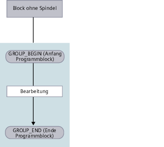
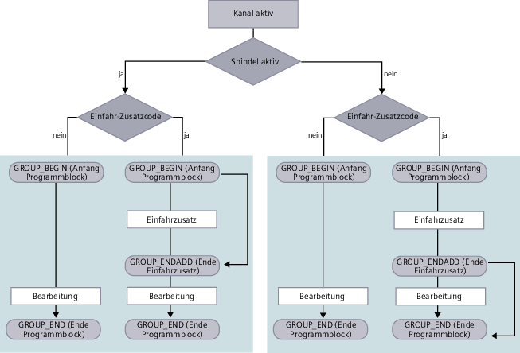
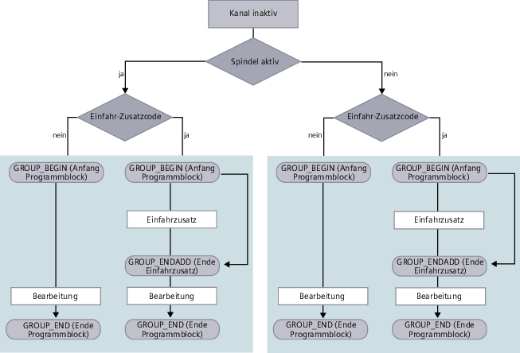

Sie haben verschiedene Möglichkeiten, Programme einzufahren.
Kanalweises Einfahren
Über die Funktion "Einfahren" wählen Sie im Fenster "Programmbeeinflussung" die Kanäle, die verfahren werden sollen. Die hier nicht angewählten Kanäle werden in den Zustand "Programmtest (PRT)" versetzt. Die Kanäle werden damit nur berechnet, aber nicht verfahren.
Es werden keine M- und Hilfsfunktionen oder Werkzeugfunktionen ausgegeben. Nur für angewählte Spindeln werden Spindelbefehle ausgegeben.
Spindelweises Einfahren
Es werden nur die Bearbeitungen an den unter Programmbeeinflussung / Einfahren angewählten Spindeln ausgeführt. Hierzu ordnen Sie bei der Programmierung mithilfe der Blockbildung die entsprechenden Bearbeitungen jeweils einer Spindel zu.
Bei der Blockerstellung kann ein ganzer Block einer Spindel zugeordnet werden. Für den Fall, dass der Block nicht ausgeführt wird, da die angegebene Spindel beim Einfahren nicht betrachtet werden soll, ist es möglich einen so genannten "Einfahr – Zusatzcode" zuzuschalten.
| | Software-Optionen Für die kanalübergreifende Programmbeeinflussung benötigen Sie die Option "programSYNC". |
Voraussetzung
Mehrkanalige Maschine
Über "Einstellungen für Kanalfunktionalitäten" haben Sie Mehrkanalansicht gewählt.
Vorgehensweise
Beispiele
Folgendes Ablaufdiagramm zeigt die Programmteile der Programmblöcke, wenn im Programmblock keine Spindel ausgewählt wurde:
Block ohne Spindel
Folgendes Ablaufdiagramm zeigt die Programmteile der Programmblöcke für einen aktiven Kanal, den Sie im Fenster "Programmbeeinflussung" über die Funktion "Einfahren" gewählt haben:
Kanal aktiviert, Programmblock mit Spindel
Folgendes Ablaufdiagramm zeigt die Programmteile der Programmblöcke für einen inaktiven Kanal, den Sie im Fenster "Programmbeeinflussung" über die Funktion "Einfahren" deaktiviert und somit in den Zustand "Programmtest (PRT)" versetzt haben:
Kanal inaktiv, Programmblock mit Spindel